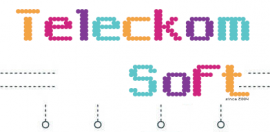

Evidență medicală
electronică de gestiune
a sistemului medical.
Fișe medicale electronice
complet integrate
- managementul practicii
- programare
- facturare electronică
- internaționalizare
- o comunitate vibrantă etc... .
Poate rula pe Windows,
Linux, Mac OS X
Dosarele medicale
electronice
Întâlniri
Vizualizator de
imagini medicale (DICOM)
Formulare bazate pe
șabloane
Probleme medicale
Mementouri date
Note pentru pacient
Grafic grafic
Medicamente
Vitale (diagrame
de creștere incluse)
Gestionarea electronică
a documentelor digitale
Interoperabilitate
Imunizări
Forme și note clinice:
Notă SOAP
Revizuirea sistemelor
Modulul Ochi (Oftalmologie
/ Optometrie)
CAMOS (Sistem de comandă
medicală asistat de
computer)
Note naționale
(editor WYSIWYG)
Abilitatea de a
crea și personaliza
formulare
Terapie de grup
Laboratoare
Proceduri
Rapoarte de pacient
Recomandări
Dezvăluiri
Recunoaștere vocală
gata (sisteme de operare
MS Windows)
Urmărirea diagramei
de hârtie
Raportarea electronică
a supravegherii sindromului
Mesaje clinice
Trimiteți și primiți
înregistrări medicale
prin mesagerie directă
Rapoarte
Programări
Statistici de procedură
ordonate
Colecții
Supraveghere sindromică
Liste de pacienți
Calcule automate
de măsurare și urmărire
Comenzi de procedură
în așteptare
Vânzări
Prescripții și
distribuire de droguri
Recomandări
Imunizări
Calcule de măsură
clinică
Calculele măsurilor
clinice de calitate
Urmărirea diagramei
de hârtie
Distribuții de
asigurări
Eligibilitatea
asigurărilor
Limba și etnia
Acoperire de asigurare
Urmărirea morților
Complet personalizabil
Demografia
pacientului
Urmăriți datele
demografice ale
pacienților
Informații de
contact ale
pacientului și
ale angajatorului
pacientului
Informații principale
(nume, data nașterii,
sex, identificare)
Informații
Starea civilă
Furnizor principal
Programarea
pacientului
Categorii pentru
tipuri de întâlniri
Programări repetate
Tabloul de flux,
urmărirea și
raportarea pacientului
Calendar de
întâlniri compact
și flexibil
Suportă mai multe
facilități
Notificare de
numire a pacientului
prin e-mail și sms
Restricționarea
programărilor în
funcție de tip
Depistarea aleatorie a
medicamentelor pacientului
Reamintim (mementouri)
Funcțiile calendarului
includ:
Găsiți spații deschise
pentru întâlniri
Culorile asociate
tipurilor de programare
și facilității
Prescripții
Suport dispensar
farmaceutic intern
Urmăriți prescripțiile
și medicamentele pacienților
Creați și trimiteți rețete
Căutare online de
medicamente
Imprimare
Aspect personalizabil
pe sigla institutiei.
Fax
E-prescrie
E-mail
Facturare medicală
Memento-uri pentru
pacienți
Interfață de urmărire
a asigurărilor
Calcule de măsurare
a calității clinice
Reguli de decizie
clinică
Suport pentru
creanțe pe hârtie
Complet personalizabil
și flexibil
Interfață de gestionare
a daunelor medicale
Întrebări privind
eligibilitatea asigurărilor
Interfață de încasat
conturi
Personalizabil
pentru a lucra
cu o casă de compensare
pentru intrarea automată;
Memento-uri ale medicului
Calcule automate
de măsurare a
utilizării semnificative
Portalul pacientului
Programări
Alergii
Medicamente
Suport CCDA
Programare și programări
Laboratoare
Mesaje și chat
securizate
Plăți online
Trimiteți înregistrări
prin mesagerie directă
Formulare personalizate
Înregistrare pacient nou
Interfață de utilizator
modernă
Rapoarte
Probleme medicale
API securizat care
acceptă portaluri
de terți pentru pacienți

Clientul are intotdeauna
dreptate. Este regula
numărul unu. Regula
numărul doi - Dacă clientul
greșește, consultați regula
numărul unu. Apropo,
relațiile în orice fel de
afacere se bazează de obicei
pe acest principiu simplu.
Clientul dorește să obțină
un serviciu de înaltă
calitate, astfel încât
furnizorii de servicii
trebuie să aibă succes.
Iar companiile agricole
nu fac excepție de la
această regulă.
Aplicațiile moderne ferma
pentru agroindustrie au
posibilitatea de a ține
cont de echipamente și
mașini agricole, de a
ține cont de număr și
greutate, numărul total
de animale, de a ține
evidența plantelor
sezoniere și anuale și
a diferitelor cicluri
de creștere a animalelor.
Pe baza analizei datelor
obținute despre fluxul
de lucru al întreprinderii
agricole, sistemele
ferma oferă utilizatorilor
următoarele caracteristici
și oportunități: După
cum am menționat deja,
sistemele specifice de
automatizare trebuie
selectate pentru tipuri
specifice de activități
economice care analizează
datele cât mai eficient
posibil în conformitate
cu specificul întreprinderii.
Dacă companiile implicate
în producția de oțel vor
necesita unele metode de
colectare și analiză a
datelor, atunci în
agricultură, software-ul
ferma va necesita cu
totul alți algoritmi
de prelucrare a datelor.
Agricultura este un
domeniu complicat și
pe mai multe niveluri
care necesită o alegere
mai detaliată a ferme
pentru automatizare și
gestionarea întreprinderii.
Deci, puteți efectua
tot ceea ce este enumerat
mai sus folosind o
singură aplicație, indiferent
dacă este vorba de o
aplicație mobilă sau web.
Dezvoltarea unor astfel
de tipuri de software
este foarte populară astăzi.
Una dintre cele mai
importante caracteristici
ale acestor module ferme
este scăderea impactului
factorului uman și
reducerea cheltuielilor.
Sistemul automatizează
o mulțime de procese,
cum ar fi: poate reuni
și afișa cele mai bune
oferte; luând în
considerare logistica
și transportul la
destinație; poate
conta pe eficiența
muncii fiecărui manager;
vă permite să lucrați
de la distanță; fiecare
utilizator are acces
doar la baza sa de date.
Dacă sunteți singurul
angajat din compania
dvs., atunci puteți
utiliza doar un
blocnotes, un stilou
și memoria dvs.
Dar dacă aveți o echipă
numeroasă, numărul
clienților crește în
fiecare zi și există
o mulțime de informații
legate de fiecare client
- începând de la suprafețe
cultivate, cantitatea
de animale, până la
contacte. Dacă toate
aceste informații sunt
scrise într-un bloc de
notă pe hârtie, vor
fi foarte incomode și,
în plus, hârtia pur
și simplu se poate pierde.
Și dacă trebuie să
verificați ceva, va
trebui să căutați
informațiile necesare
pentru câteva ore.
Este ca o epocă de
piatră, nu-i așa?
Pentru 6 euro intretinere
pe luna odata la 3 luni
plata, cu avans zero
de instalare, dar pe
gazduirea dumneata.
Instalare intr-o singura
dimineata transportul
pentru montarea aferenta
se plateste in avans.
